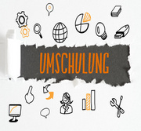

Germany
Living in Germany can be an unforgettable experience, but there
are some important things to know before you jump on your flight to
start your new life. Everything from finding accommodation to setting
up a local bank account, figuring out the ins and outs of German health
care to the logistical issues of moving to Germany, there’s so much to
get your head around.
Germany is a popular choice for foreigners to move for work, and for a good reason.
Germany has great working conditions, including some of the highest salaries in the world,
great working benefits, and long holidays. If you just moved to Germany and want to find a
job but don’t necessarily speak the language, or if you’re thinking about moving there and
want to learn more about your possibilities, you’re in the right place. Keep on reading to
learn more about: READ MORE...
Obligatory police registration
Keep in mind that whether you’re an EU citizen or not, after finding an accommodation
you will have to do the obligatory police registration. You can do it in the local residency
office BÜRGERAMT
Getting all the documents ready to start working in a new country can be a long and difficult
task, and Germany is no exception. In fact, Germans seem to love documents and paperwork, so you
need to get ready to hand in a lot of documents before you are good to start working.

Germany is one of those few countries which have successfully implemented
the Vocational training program to fit the major working community of the
country. Normally, students 16-18 years old who wish to enter the working pool
at the earliest or those who are good at ”Handwerk” opt for an Ausbildung..

Umschulung is assigned to the area of continuing vocational training , i.e.
adult and continuing education. Under retraining means the training or retraining
for a different than the previously applied or studied activity.
Weiterbildung is continuing of Professional Education. Vocational training is any
educational process that deepens or extends existing vocational training. It takes
the form of organized learning. This is preceded by earlier educational phases and
interim employment. It is part of the privately accessible German education canon .
On the other hand, advanced training is usually a publicly accessible educational
measure.
The German VET System
In this section you find information on the German VET system – on
its success factors, its structure and components as well as on challenges
and future topics for the further development of the system.
Internationally, Germany’s VET (vocational education and training) system is
recognized as a successful model, largely because of the dual system, which leads
to high-quality vocational qualifications and enables smooth education-to-work
transitions. Although it is definitely at the heart of the German VET system the
dual system does not cover all aspects of the German VET system. There have been 490.267
students in the dual system but also 225.590 students who study in so called full-time
vocational schools in 2017 (cf. VET Data Report Germany 2017, p. 90). The complete German
VET system consists of the elements described below.
IHK Foreign Skills Approval (IHK FOSA)
Підтвердження диплому
The IHK Foreign Skills Approval (IHK FOSA) is the national competence
centre of the German chambers of industry and commerce for the evaluation
and recognition of foreign vocational qualifications. IHK FOSA accepts
applications for recognition and examines them in order to determine to
what extent the foreign qualifications can be considered equivalent to
corresponding German qualifications.
In this way, the IHK FOSA makes a significant contribution towards ensuring
a supply of skilled personnel in Germany and to a better integration of migrants
into German society.